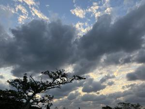
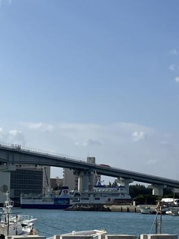
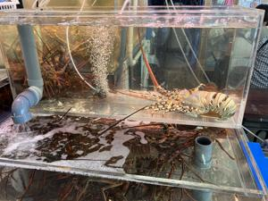

うるがいの話 ある日
最新: お義母さんの口座をロック【うるがいの話 ある日】とは 一日だけのプログです
『うるがいの話』の最新一日だけのプログで、通信料が少なく経済的だ。カニの画像をクリックすると全ての日付が載る『うるがいの話』サイトを表示します
|
|
【うるがいの話】 うるがい(ｳﾙｶﾞｲ urugai)とは、『もずくがに』の名前でとても大きくなります。 |
|---|---|
|
|
【カミマヤーの話】 猫のことを方言でマヤーといいます。カミマヤー（kamimayaa）とは、神の猫のことです。 |
|
【たながぁの音楽】 たながぁ（ﾀﾅｶﾞｰ tanagaa）とは手長えびのことで、何種類かあり大きいのは車 エビぐらいになります。 |

|
【ぶながぁの話】 ぶながぁ(ﾌﾞﾅｶﾞｰ bunagaa)とは、赤い髪の毛、赤い身体、そして身長は１ｍ２０ｃｍ ぐらい、川の蟹を食べているの目撃された。場所は沖縄県国頭郡大宜味村のと ある村僕の隣近所に住んでいる爺さんから、聞いた話です。 |
|
|
【ギーマの話】 ギーマ(giima)とは、山原の里山に咲くスズランに似た、 花を付けます。実は食べられます、 気が付くと口の周りが紫になっています。 |
2024年11月28日 (木）お義母さんの口座をロック
15:05

年金事務所で年金受給停止の手続きを行う。年金の受け取り額の口座扱
いは、ヨメの口座となる。お義母さんの銀行口座の死亡届けを済ませる
前提で説明された。お母さんは、１１月２日に亡くなったので１１月と
１２月分（年金は日割りでない）の２か月分が振り込まれるらしい。い
ったん、いま登録されているお義母さんの口座に、振り込み手続きを従
来とおなじように振り込むが、銀行で口座がロックされているので不能
となり、今日書いたヨメの受け取り口座に２か月あとに振り込まれると
のこと。
バイクで泊魚市場へ行く
 
え！、ヨメは電気料金などいろいろな自動引き落としが、まだあるので
しばらくは放置したかったのに。仕方ないと、銀行へお義母さんが亡く
なった事を告げにいく。銀行で、電気、水道、ガスなどの公共をのぞき
お義母さんの口座から、引き落としや入金ができない手続きをします、
と数か月してこれらの名義変更などを考慮して、解約の続きをしてくだ
さい。手続きは、残高が少額なのかヨメが想定した遺産相続などの書類
など不要で簡単だと分かったとことが分かる。フムフム、近くに知って
いる人がいたら、要らぬ心配などしなくて済むのにと思った。
１４時５７分 ビットコインの総資産 ￥４２、０２３（↑９４６）
売却額 ￥４０、７６１
明日、売るかな。